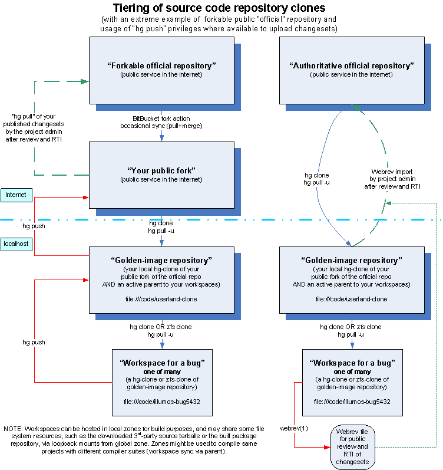

Requires Review
This page references some old practices and needs to be reviewed.
Working on multiple bugs at once¶
By Jim Klimov
Introduction¶
It is not rare to have a contributor working on several disparate sub-projects which are of interest to him, such as fixing different bugs or updating documentation man-pages, in parallel. This means that the developer has been assigned several bug/RFE IDs in the common bugtracker and prepares changes in his local development environment in order to propose a webrev for public review and ultimately request-to-integrate his or her fixes. A "newbie" contributor might take on a number of bite-sized quests that others postponed indefinitely, just to get the hang of the development environment.
The tricky part here is that a developer can be working on small bugs, and the latency of review/RTI process would cause him to idle around between singular quests and lose interest, while he could go on a new task right after posting one for review. However, working on several tasks in one workspace is also potentially problematic – the webrev would consolidate all changes (from works on different bugs), while the central (official) repository policies highly prefer atomic updates – "one changeset = one bug", or close to that.
Source-code management systems have a number of solutions to this problem. Where other systems propose working in branches of code, which would ultimately be merged, most if not all illumos developers (of those who responded to my call for real-life info) prefer to clone complete Mercurial repositories (one per bug), spawn separate workspaces and develop there. The rest of this page shall discuss several practical approaches to this.
There is also some controversy about using Mercurial Queues to track small fixes:
Gordon: If you have a bunch of small fixes underway simultaneously, you might consider using "hg mq" (hg qpush, hg qpop, ...): http://mercurial.selenic.com/wiki/MqExtension Dan: I find mq causes more problems than it solves but that's just me.
Three-tiered approach¶
In this approach the developer maintains a "clean" replica of the official repository ("illumos-clone" as a hg-clone of official illumos-gate in examples below), and his development workspaces ("ws1 .. wsN" in examples below) are instantiated in clones of this replica. No actual development occurs in illumos-clone workspace.
Whenever work on a new task starts, the developer updates his illumos-clone to current source code, and creates a clone of it (several methods are available and discussed below) named like ws1 or illumos-bug1234.
For people who understand pictures better, here is an illustration of proposed repository cloning and tiering architectures:

After some development and testing, the developer has committed his changes to the ws1 repository (with the comment like "1234 Bug description one-liner"). He should then pull and update the illumos-clone repository from official sources and update the ws1 repository from illumos-clone, and merge any changes. This way the ws1 repository now contains his work as if it was done against the current revision of the "official" public source codes. Then the developer prepares a webrev and provides it for public review.
Bob: While you were patiently waiting, other changes were put into upstream
Mercurial. These changes have to be pulled and merged (to tip) before Mecurial would allow you to push (assuming you were authorized). If files you edited have been updated over time, it would be polite to pull, merge with those changes, re-test, and if they are significant to your work, re-request a review.
Mercurial only allows you to push if there is just one head (tip). If
changes come in via a pull after you have done a commit, then there will be two heads, which need to be merged. Use 'hg heads' to see the heads.
For repositories where the user has the push privileges (such as a forked repository on the BitBucket), the developer can push his tested changes from ws1 repository to illumos-clone repository and then to his own repository fork on the public hosting service. This would allow other developers to look into completed code for review, or to pull his changes into their systems (such as when the integration into "official" repository occurs).
Bob: If you do "hg paths" in illumos-clone it will report that it points to the official master. If you do the same in "ws1" it will report that it points to local "illumos-clone".
If your approved changeset is in "ws1" then you would first do "hg push" in "ws1", then change to "illumos-clone" (which now contains the changeset) and do "hg push" to push to the official master. Of course merging is likely required before you can push.
The necessary pulls are inverse of the push – so if you want to get new upstream changesets into "ws1", you would first do an "hg pull" in "illumos-clone" and then in "ws1".
Changes may be pushed to something other than the default upstream repository by specifying the respository URL when you do the push, or by editing .hg/hgrc inside the repository base directory and changing the "default" definition to the new path. This means that you could push directly from "ws1" to the official master provided that any pending upstream changesets have been merged as a merge changeset.
This pattern applies not only to illumos-gate, but also to other related illumos/OpenIndiana subprojects hosted in Mercurial repositories. Keeping a tier of the golden repository allows you to save some internet traffic (when propagating changesets from upstream to your numerous workspaces) and to quickly instantiate clones of the current public source code (again, saving on traffic – actually, being independent of network connectivity).
Dan: I actually maintain a clone of illumos-gate locally (illumos-clone), and my works in progress are children of illumos-clone. It does eat disk space, but combined with sensible build practices (e.g. not doing full nightly builds until you're very close to integration) it's not all that bad.
Don't forget about building modules when you only need modules, as I mention here: http://kebesays.blogspot.com/2011/03/for-illumos-newbies-on-developing-small.html
Some developers use short-lived repos for one task, others instead prefer to spawn a few workspaces, and reuse them for new projects after the current one has been committed upstream:
Steve: after my changes are pushed, I can just sync it up with its parent and I am ready to work on another change-set in this repo (hg pull; hg update). I do use mv to rename repos, so that I have some visual reminder of what that repo is currently used for. Dan: Once a child's diffs appear in illumos-gate, the child gets removed.
General setup¶
General build-system preparation is as outlined in How To Build illumos, however there is some difference in source-code repository organization and naming. Like in that tutorial, the repositories are assumed to be hosted under /code directory. Depending on the adopted pattern, each repository can be an individual ZFS dataset, or they can be sub-directories within one filesystem.
Elaborate on dataset setup, perhaps copy from main tutorial.
There are at least two variations, depending on the technology you choose to use. You can clone repositories with tools built into the SCM, in our case – by using the "hg clone" command. Alternately you can use ZFS clones and rewrite the pointer to parent repository in the cloned child repo. Also the repositories can be just copied as directories with files, but this is likely to be the most space-consuming option.
zfs-cloning – Prepare dataset hierarchy¶
Note
These examples put the repository into rpool. You're welcome to use another ZFS pool if available on your system.
To follow this route, each your repository must reside in its individual dedicated dataset which was created and prepared with commands like these (see How To Build illumos for more details):
sudo zfs create -o compression=lzjb -o atime=off rpool/export/home/illumos-dev sudo zfs create rpool/export/home/illumos-dev/code sudo ln -s ./export/home/illumos-dev/code / sudo chown -R $USER /export/home/illumos-dev sudo zfs create -o sync=disabled rpool/export/home/illumos-dev/code/illumos-clone
hg-cloning or file-copying¶
I was told that hg clone would try to use hardlinks to save space and time, so I guess keeping the masters and clones in one filesystem (accessible under /code below) is highly recommended.
Bob: Look in the hidden .hg directory for the actual repository. For local clones, Hg can use hard links to refer to the same repository files. The hard link is broken if the file is to be updated. ZFS's clone can do a bit better because Mercurial only appends to repository files so ZFS-cloned blocks will remain de-duplicated unless they are a short tail block which was updated.
You are still welcome to use a ZFS dataset dedicated to holding all the repositories:
sudo zfs create -o compression=lzjb -o atime=off rpool/export/home/illumos-dev sudo zfs create rpool/export/home/illumos-dev/code sudo ln -s ./export/home/illumos-dev/code / sudo chown -R $USER /export/home/illumos-dev
Initialize the local master repository¶
The repository directory may exist, but must be empty if it does.
cd /code hg clone ssh://anonhg@hg.illumos.org/illumos-gate ./illumos-clone
Never touch illumos-clone except to pull changes from upstream
Mercurial allows to rename repositories as suits you today with filesystem utilities (this may be more useful on your child repositories though – i.e. rename them according to your bug-number-du-jour), so creation of your golden repository could instead be done like this:
cd /code hg clone ssh://anonhg@hg.illumos.org/illumos-gate mv illumos-gate illumos-clone
Update the local master repository¶
cd /code/illumos-clone hg pull -u
Since there are no changes of your own in this repo, merging should be trivial and complete automatically.
Clone the local master into a child repository for work¶
There are at least two variations, depending on the technology you choose to use. You can clone repositories with tools built into the SCM, in our case – by using the "hg clone" command. Alternately you can use ZFS clones and rewrite the default pointer to parent repository in the cloned child repo.
Bob: In addition to "default" there is "default-push" which specifies the default URL to push to. Besides the apparent "exotic" setup there is also the mundane approach (which I use) which pulls updates from the http:// appearance of a server and pushes to the ssh:// appearance of the same server. This results in faster clones/updates while obtaining the secure SSH authentication when pushing.
Also the repositories can be just copied as directories with files, but this is likely to be the most space-consuming option.
Examples below use the bugID-based naming convention for child repositories and their workspaces. Some developers instead prefer to spawn a few statically-named workspaces ("ws1 .. wsN"), and reuse them for new projects after the current one has been committed upstream (so the repo with this author's changes is identical to upstream).
zfs-cloning¶
Update the local master repository (see above) and create a uniquely named ZFS snapshot of its dataset, and then clone it, for example:
zfs snapshot rpool/export/home/illumos-dev/code/illumos-clone@20120503-2006 zfs clone rpool/export/home/illumos-dev/code/illumos-clone@20120503-2006 rpool/export/home/illumos-dev/code/illumos-bug1234
Now you'll have to modify the clone's pointer to parent repository (so it's local, not Internet as was for the golden image). Edit /code/illumos-bug1234/.hg/hgrc file which may look like this:
[paths] default = ssh://anonhg@hg.illumos.org/illumos-gate
You should replace the default path with the local pathname to the local master repository, like this:
[paths] default = /code/illumos-clone hg-cloning
Update the local master repository (see above) and create a Mercurial clone:
cd /code hg clone illumos-clone illumos-bug1234
This takes care of the child's parent relationships.
file copy cloning¶
This is the least recommended method. Still, you might have your reasons...
Update the local master repository (see above) and copy the whole repo directory:
cd /code cp -pr illumos-clone illumos-bug1234
You might alternatively use rsync, gtar, cpio and such.
Work in the child copy¶
cd /code/illumos-bug1234 ### edit files hg add <new files> hg commit -m "1234 Bug description one-liner" webrev... ### (example webrev command-line from real-life is appreciated) ### repeat if more work on this bug is needed
Dan: If you've just the one set of changes, "webrev" all by itself is sufficient. It'll create /code/illumos-bug1234/webrev/. You can then scp/mv/ln/etc. that webrev/ directory into an HTTP-reachable directory somewhere.
After some work in the child workspace, you need to pull changes from upstream...¶
In particular, you must do this before completing your work to make the review or integration.
### Update master repo cd /code/illumos-clone hg pull -u ### Now illumos-clone is up to date. ### For each child like "illumos-bug1234": cd /code/illumos-bug1234 ### Make sure I've committed any outstanding diffs hg pull -u ; hg merge ### Resolve conflicts if any hg commit -m blah hg recommit ### <edit push string to remove crap>
Publish your work¶
Developers' habits and best-practices "as-is":
Steve: I recommend to keep change sets small. Ideally, one bug, or concise feature per change set. Rules are made to be broken, but there are many advantages: easier to review, easier to back out, easier for someone to take or leave. > I agree about this in terms of upstream repository, that an atomary > change to close a bug is a good thing. However, does it mean that > during local development I should not "hg commit" successful changes > to my code before I go on (as I often do, leading to several commits > per day)? Or are we talking about different things? =) You could do that, but I find it is much simpler to stick to the "one repo, one changeset, one bug, one commit, one push" rule. Usually the checkin workflow for me goes like this: Done with coding and testing... Update repo with latest changes from parent, if any ( ie hg pull; hg update) Merge if necessary (relatively rare) hg commit hg push At this point the repo is ready for some other work item. >Anyway, publishing a webrev and reworking on comments, and making >new webrevs, would still likely produce several local commits. >From what I gathered around the docs, it is possible to diff your >repo against the upstream one, and produce a single changeset >which contains the final result of your work so far. Change sets are produced by "hg commit". These can be pushed (easily) to an upstream repo, and they remain change sets there as well. You can produce a text diff rendering of any change set, e.g.: hg diff -c xxxxx (xxxxx being the change set number). Also, see "hg export" and "hg import". >Also most docs value the "local commit history" (commit comments) >as being potentially useful to the developer and to the general >community after the upstream merge. How do these comments get >passed up and survive eventual destruction of the child repo >(if they do)? Yes, comments are important, they make it easier for someone to discern what the change set is about. Comments added with -m "..comment..." at commit time (or via a text editor, if you are so configured) are associated with the change set, and travel with the change set as it gets pushed, exported and imported. Again, once you commit and push the change set upstream, the comment goes with it, so it does not matter if you subsequently destroy the repo where you did the work.